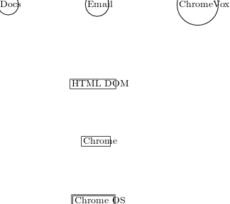

Chrome OS is an operating system created by Google. A key insight behind its design is that it is now possible to do most (if not all) of one’s work within a web browser. Building on this insight, Chrome OS machines boot up within seconds of turning on and immediately launch Chrome; from that point onwards all user interaction happens within the browser and all applications are implemented as web applications.
We created ChromeVox to be a screen reader built into Chrome OS which led to the following design requirements:
Since all applications on Chrome OS are web applications running in Chrome, and since an increasing proportion of the platform’s user interface is itself implemented in the web programming model, we chose to do away with the traditional metaphor of applications communicating via an accessibility API intermediated by the operating system. Instead, ChromeVox uses the HTML Document Object Model (DOM) as the means of communicating with web applications running within Chrome 2.
For the small portion of the user interface that is not implemented in HTML, we expose these interaction elements to JavaScript via a light-weight custom interface. User interface elements in the “chrome of Chrome”, e.g., toolbar buttons, menus, and the address bar, raise events in response to user interaction that in turn produce appropriate alternative feedback through ChromeVox. But as HTML evolves to support ever-richer user interaction, we are seeing some of these native user interface components migrating to a web interaction model, possibly obviating these additional APIs over time.
 WebAppWebAppWebAppBrowserNative Code